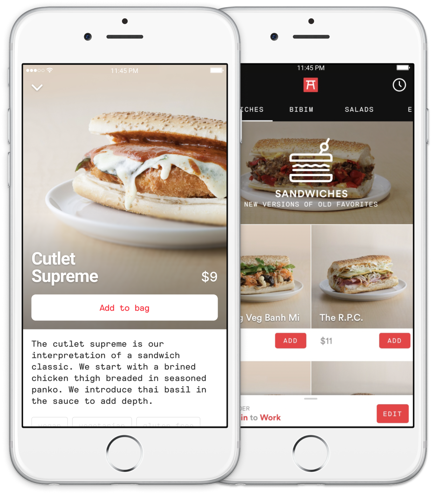

Ando
A delivery-only restaurant by Momofuku.
About
After the successful sale of Sidecar to General Motors, I was tapped by the teams at Momofuku and Expa to lead the brand, product, and creative direction for Ando – a delivery only restaurant by Momofuku.
During my time there, I was responsible for designing multiple zero-to-one products spanning from the app customers used to place orders to the menu management system chefs would track inventory in. Additionally, I led our food photography and packaging efforts.
During my time there, I was responsible for designing multiple zero-to-one products spanning from the app customers used to place orders to the menu management system chefs would track inventory in. Additionally, I led our food photography and packaging efforts.
üõçÔ∏è Ando was acquired by Uber in 2017.
